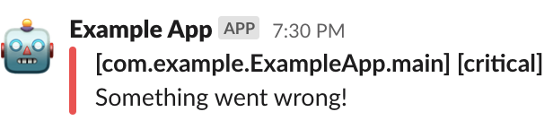

View on GitHub
View on GitHub
 LoggingSlack Reference
LoggingSlack Reference
LoggingSlack


Welcome to LoggingSlack – a logging backend for SwiftLog that sends critical log messages to Slack.
Usage
Setup Incoming Webhooks
LoggingSlack uses Incoming Webhooks to send log messages to a Slack channel.
Once you’ve setup Incoming Webhooks, you should have a webhook URL that you can use to configure LoggingSlack.
Bootstrap SwiftLog
LoggingSlack is intended to be used as a secondary logging backend to send critical log messages directly to Slack.
You can use SwiftLog’s MultiplexLogHandler to setup LoggingSlack with another logging backend.
import Logging
import LoggingSlack
let webhookURL = URL(string: "https://hooks.slack.com/services/T1MGQL1L8/RM2LE5QLF/YH036NhldqitdR1lVd5NLS6z")!
LoggingSystem.bootstrap { label in
MultiplexLogHandler([
// Setup SlackLogHandler with a webhook URL
SlackLogHandler(label: label, webhookURL: webhookURL),
// Setup the standard logging backend to enable console logging
StreamLogHandler.standardOutput(label: label)
])
}
Using a Logger
You can now use SwiftLog as usual and critical log messages are sent directly to Slack.
import Logging
let logger = Logger(label: "com.example.ExampleApp.main")
logger.critical("Something went wrong!")
Output
This will output a Slack message and a console message since both logging backends were setup.

2020-02-15T19:30:00-0800 critical: Something went wrong!
Log Level Thresehold
Only critical log level messages are sent to Slack by default.
You can adjust the log level threshold by changing the globalLogLevelThreshold static property on SlackLogHandler.
For example, this will configure LoggingSlack to send all error log level and above messages to Slack.
SlackLogHandler.globalLogLevelThreshold = .error
API Documentation
Visit the online API reference for full documentation of the public API.
Installation
LoggingSlack requires Xcode 11 or a Swift 5.1 toolchain with the Swift Package Manager.
Swift Package Manager
Add the LoggingSlack package as a dependency to your Package.swift file.
.package(url: "https://github.com/wlisac/swift-log-slack.git", from: "0.1.0")
Add LoggingSlack to your target’s dependencies.
.target(name: "Example", dependencies: ["LoggingSlack"])